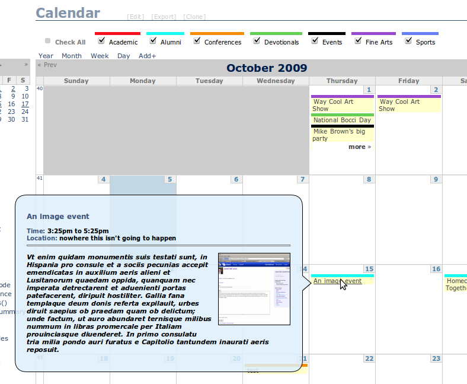

Kyle Mathews lives and works in San Francisco building beautiful things. You should follow him on Twitter
Kyle Mathews lives and works in San Francisco building beautiful things. You should follow him on TwitterLately I’ve been helping out a web development team at BYU develop a new calendaring system in Drupal to replace our existing all-in-one calendar. It’s an ambitious project that’s leveraging quite a few different modules from the Drupalsphere.
Some of the features include:
Here’s a screenshot of the UI as of last night:

I wanted to blog about how we created our ical exports by category as I couldn’t find any documentation about this and it doesn’t work out of the box.
The default view from Calendar includes an ical display. This, by default, filters ical feeds by date — e.g. only include events in the ical feed after a certain date. This works fine.
The problem we ran into is how to filter the ical feed by taxonomy terms. In Views we created a taxonomy term filter and exposed that to users so they can created custom calendar views of different event categories. That worked wonderfully. The problem was that when you downloaded the ical feed from the filtered calendar view, it included all events, not just events from the categories you’d selected.
After examining the url for the ical feed we found the problem.
The default ical URL that’s generated looks like this:
/aiocalendar/calendar/ical/2009-10?tid[2]=2&tid[1]=1&tid[3]=3&tid[4]=4&tid[5]=5&tid[6]=6&tid[7]=7
Views takes each url segment separated by a forward slash as arguments. calendar/ical tells views to return an ical representation of the calendar. 2009-10 tells views to only include events from October 2009 onward. But the next bit, ?tid[2][2]=2&tid[1][1]=1&tid[3][3]=3&tid[4][4]=4&tid[5]=5&tid[6][5]=6&tid[7][6]=7, a list of term IDs that were currently active on the calendar view, weren’t working at helping Views produced a filtered ical feed.
Digging into the taxonomy term argument, I discovered it expected arguments in the form of 1+2+3 or 1,2,3. 1+2+3 meaning Views would return events that had terms 1 OR 2 OR 3 and 1,2,3 meaning Views would return events that had terms 1 AND 2 AND 3. For example, aiocalendar/calendar/ical/2009-10/1+4+6 would return an ical feed of all events from October 2009 onward that had term ids of 1 or 4 or 6.
I jumped to the command line and tested my theory by using wget and some handcrafted urls and it worked! The ical feeds I was getting only included events from categories I included as arguments in the URL.
Now the trick was to override the ical url generated to replace it with one in the correct format. I found the theme function in the Calendar module where the the ical feed icon was generated, copied that to my module, and rewrote the url using some regex kungfu (read more on overriding theme functions in the Drupal handbook).
<?php
/*
* Override theme_calendar_ical_icon() so we can override the url produced.
*/
function phptemplate_calendar_ical_icon($url) {
// Pull out array of Term IDs from the url.
$search = preg_match_all("/tid\[([0-9])*\]/", $url, $matches);
$tids = $matches[1];
// Grab url stem, we'll add the Term ID arguments back in a bit.
$search = preg_match("/(.*ical\/)20[0-9]{2}-.*/", $url, $url_stem);
$url = $url_stem[1];
// Views arguments treat a "+" between arguments as OR.
// So we're crafting an argument that asks for all events which match one of the
// term IDs.
foreach($tids as $tid) {
$url .= $tid . "+";
}
// Trim off extra +
$url = trim($url, "+");
if ($image = theme('image', drupal_get_path('module', 'date_api') .'/images/ical16x16.gif', t('Add to calendar'), t('Add to calendar'))) {
return '<div style="text-align:right"><a href="'. check_url($url) .'" class="ical-icon" title="ical">'. $image .'</a></div>';
}
}
?>We’ll be releasing our calendar, custom code and all, as a feature on BYU’s own feature server once the new calendar is released to production. But you can grab a development copy of it now at https://island.byu.edu/content/first-upload-calendar-feature
The BYU Drupal community is collaborating to improve our calendar feature as it solves nicely a common need on the many department web sites deployed on campus. If you’d like to join the Drupal Calendar group to participate, contact me, and I’ll create an account for you on our groups site.
Posted October 6, 2009Kyle Mathews lives and works in San Francisco building beautiful things. You should follow him on Twitter